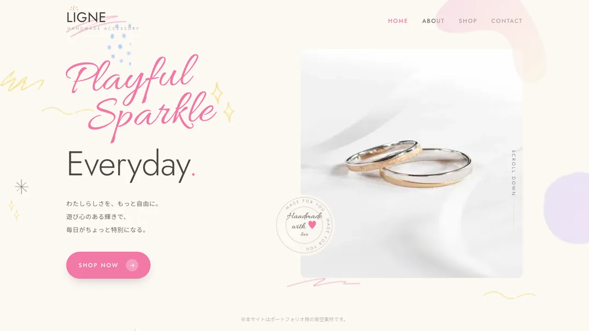
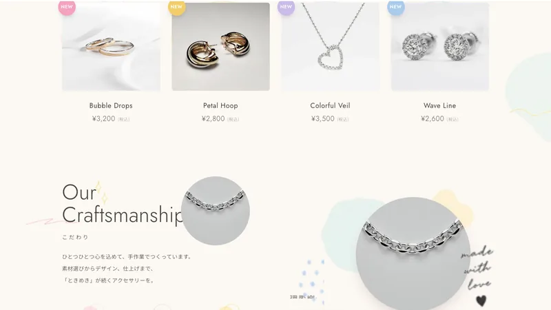

Case Study — Landing Page
Handmade Accessory
LP
新作コレクションのランディングページ。一画面で世界観と魅力を伝え、行動につなげる構成にしました。

Problem
課題
新作コレクションの魅力を、短時間で伝えきれる入り口が必要でした。
Approach
アプローチ
ファーストビューで世界観を伝え、スクロールに合わせて魅力・こだわり・行動喚起へと流れる1ページ構成に。スクロール演出で没入感を高めました。

Result
成果
コレクションの世界観が一気に伝わる入り口として機能し、SNS施策と組み合わせて活用されています。